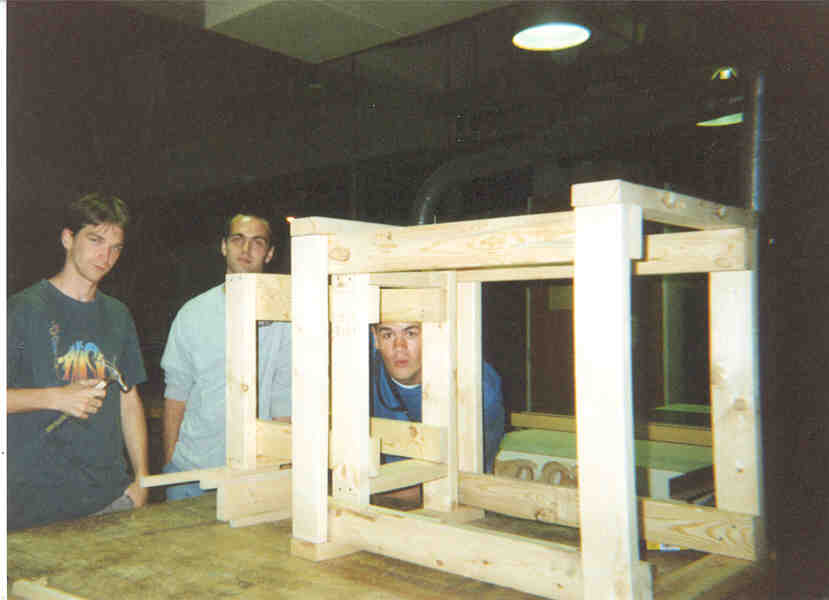
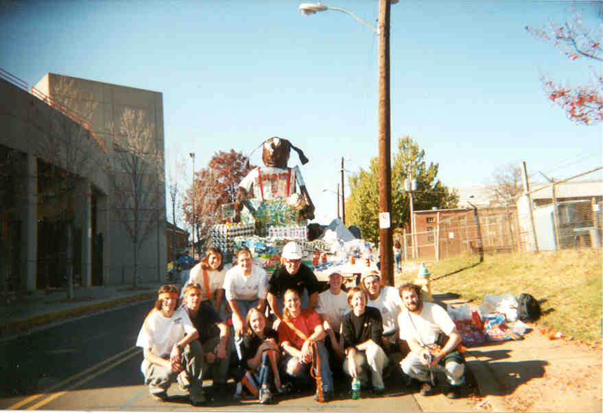
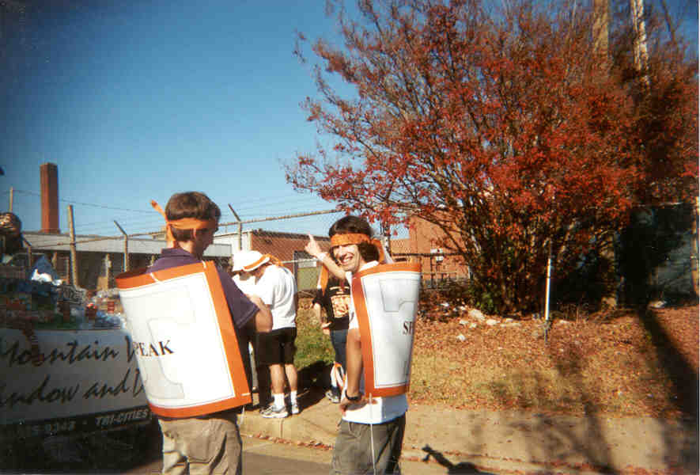
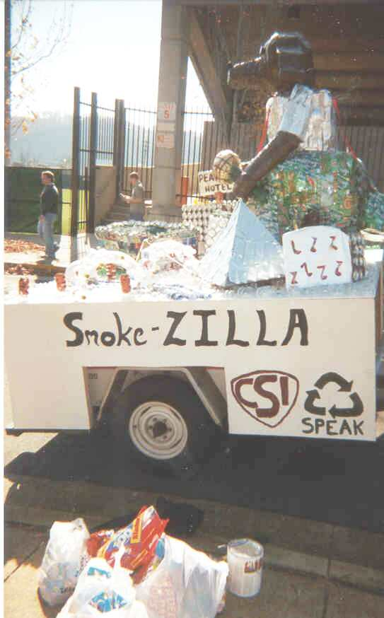
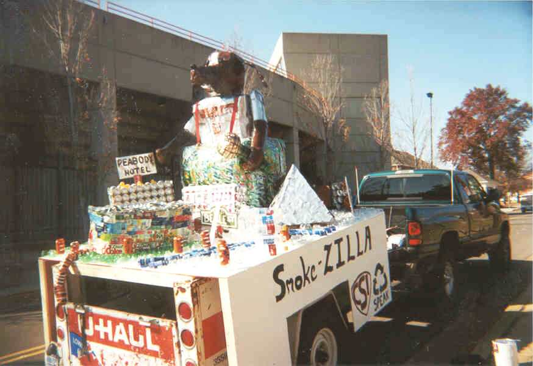

SPEAK 2001-2002 Pictures
Student Activities Fair
Make a Difference Day
ECOnference 2001
Native Plant Garden
Waste Audit
Homecoming 2001
SPEAK 2000-2001 Pictures
SPEAK/Volunteers United Clean-Up
SPEAK Meetings
UT EarthDay
Knoxville EarthDay
SPEAK/GoldenKey CleanUp
SPEAK '01
Homecoming 2001

The making of the float. Eric, Ryan, and Andrew help build the base of the float.


Eric and Tony...

The side view of Smoke-ZILLA, our float made totally out of recycled materials!

The final project. We won 3rd place in the small float division!!
Friday, November 8th
SPEAK and Architecture CSI float
Getting ready for the parade!